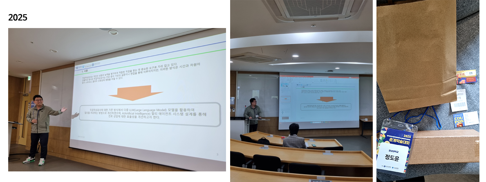

2025. Conference 1
2025. 5 Korea Smart Media Society & Society for e-Business Studies Spring Conference
Design of an AI LLM Multi-Agent System for Vocational Aptitude Tests
Section: Oral
Do-Yoon Jung, Gwang-Mi Choi, Nam-Ho Kim*
Department of Computer Engineering, Honam University, Gwangju 62299, Korea

Abstract
This study proposes a design for an AI LLM (Large-Scale Language Model) multi-agent system that processes user queries in aptitude tests. This system, implemented using Llama 3.1 Instruct, establishes relationships between a Master Agency and client agents (Client Agent 1, Client Agent 2, and Client Agent 3). Data transmission and reception are efficiently performed using the asynchronous programming technique await and JSON format. Multiple LLMs can be managed through the Master Agency, and integration with various LLMs, including Llama 3.1 and Kanana 2.1 Base, is possible. Experimental results showed response quality of 1.17 for students, 0.77 for professors, and 0.88 for counselors. The average sentence similarity score was 21.8 for students, 36.6 for professors, and 34.20 for counselors. This system not only enhances the performance of aptitude tests but also provides a method for improving multi-agent interactions within AI-based environments.